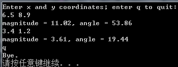

数学库：math.h
作者：追风剑情 发布于：2020-3-18 19:58 分类：C
C99为math.h头文件定义了两种类型：float_t和double_t。这两种类型分别与float和double类型至少等宽，是计算float和double时效率最高的类型。该头文件还定义了一些宏，除了HUGE_VAL外，都是C99新增的。
数学函数通常使用double类型的值。C99新增了这些函数的float和long double版本，其函数名为分别在原函数名后添加f后缀和l后缀。例如，C语言现在提供这些函数原型：
double sin(double);
float sinf(float);
long double sinl(long double);
| ANSI C标准的一些数学函数 | |
| 原型 | 描述 |
| int classify(real-floating x); | C99宏，返回适合x的浮点分类值 |
| int isfinite(real-floating x) | C99宏，当且仅当x为有穷时返回一个非0值 |
| int isfin(real-floating x) | C99宏，当且仅当x为无穷时返回一个非0值 |
| int isnan(real-floating x) | C99宏，当且仅当x为NaN时返回一个非0值 |
| isnormal(real-floating x) | C99宏，当且仅当x为正常数时返回一个非0值 |
| int signbit(real-floating x) | C99宏，当且仅当x的符号为负时返回一个非0值 |
| int isgreater(real-floating x, real-floating y) | C99宏，返回(x)>(y)的值，如果有参数是NaN，不会抛出“无效”浮点异常。 |
| int isgreaterequal(real-floating x, real-floating y) | C99宏，返回(x)>=(y)的值，如果有参数是NaN，不会抛出无效浮点异常 |
| int isless(real-floating x, real-floating y) | C99宏，返回(x)<(y)的值，如果参数是NaN，不会抛出无效浮点异常 |
| int islessequal(real-floating x, real-floating y) | C99宏，返回(x)<=(y)的值，如果有参数是NaN，不会抛出无效浮点异常 |
| int islessgreater(real-floating x, real-floating y) | C99宏，返回(x)<(y) || (x)>(y)的值，如果有参数是NaN，不会抛出无效浮点异常 |
| int isunordered(real-floating x, real-floating y) | 如果参数不按顺序排列（至少有一个参数是NaN), 函数返回1；否则，返回0 |
| double acos(double x) | 返回余弦值为x的角度(0~π弧度) |
| double asin(double x) | 返回正弦值为x的角度（-π/2~π/2弧度） |
| double atan(double x) | 返回正切值为x的角度（-π/2~π/2弧度） |
| double atan2(doubley, double x) | 返回正切值为y/x的角度（-π~π弧度） |
| double cos(double x) | 返回x的余弦值，x的单位为弧度 |
| double sin(double x) | 返回x的正弦值，x的单位为弧度 |
| double tan(double x) | 返回x的正切值，x的单位为弧度 |
| double cosh(double x) | 返回x的双曲余弦值 |
| double sinh(double x) | 返回x的双曲正弦值 |
| double tanh(double x) | 返回x的双曲切值 |
| double exp(double x) | 返回x的指数函数的值（ex） |
| double exp2(double x) | 返回2的x次幂（2x） |
| double expm1(double x) | 返回ex - 1 （C99） |
| double frexp(double v, int *pt_e) | 把v的值分成两部分，一个是返回的规范化小数；一个是2的幂，储存在pt_e指向的位置上 |
| double ldexp(double x, int p) | 返回x乘以2的p次幂（x * 2p） |
| double log(double x) | 返回x的自然对数值 |
| double log10(double x) | 返回x的以10为底的对数值 |
| int ilogb(double x) | 以signed int 类型返回x的指数(C99) |
| double log1p(double x) | 返回log(1+x)（C99） |
| double log2(double x) | 返回以2为底x的对数（C99） |
| double logb(double x) | 返回FLT_RADIX(系统内部浮点表示法中幂的底数)为底x的有符号对数（C99） |
| double modf(double x, double *p) | 把x分成整数部分和小数部分，两部分的符号相同，返回小数部分，并把整数部分储存在p所指向的位置上 |
| double scalbn(double x, int n) | 返回x × FLT_RADIXn（C99） |
| double scalbln(double x, long n) | 返回x × FLT_RADIXn（C99） |
| double cbrt(double x) | 返回x的立方根（C99） |
| double hypot(double x, double y) | 返回x平方与y平方之和的平方根（C99） |
| double pow(double x, double y) | 返回x的y次幂 |
| double sqrt(double x) | 返回x的平方根 |
| double cbrt(double x) | 返回x的立方值 |
| double erf(double x) | 返回x的误差函数（C99） |
| double lgamma(double x) | 返回x的伽马函数绝对值的自然对数（C99） |
| double tgamma(double x) | 返回x的伽马函数(C99) |
| double ceil(double x) | 返回不小于x的最小整数值 |
| double fabs(double x) | 返回x的绝对值 |
| double floor(double x) | 返回不大于x的最大整数值 |
| double nearbyint(double x) | 以浮点格式把x四舍五入为最接近的整数;使用浮点环境指定的舍入规则（C99） |
| double rint(double x) | 与nearbyint()类似，但是该函数会抛出“不精确”异常 |
| long int lrint(double x) | 以long int格式把x舍入为最接近的整数；使用浮点环境指定的舍入规则（C99） |
| long long int llrint(double x) | 以long long int格式把x舍入为最接近的整数；使用浮点环境指定的舍入规则（C99） |
| double round(double x) | 以浮点格式把x舍入为最接近的整数，总是四舍五入 |
| long int lround(double x) | 与round()类似，但是该函数返回值的类型是long int |
| long long int llround(double x) | 与round()类似，但是该函数返回值的类型是long long int |
| double trunc(double x) | 以浮点格式把x舍入为最接近的整数，其结果的绝对值不大于x的绝对值（C99） |
| int fmod(double x, double y) | 返回x/y的小数部分，如果y不是0，则其计算结果的符号与x相同，而且该结果的绝对值要小于y的绝对值 |
| double remainder(double x, double y) | 返回x除以y的余数，IEC 60559定义为x - n*y，n取与x/y最接近的整数；如果(n - x/y)的绝对值是1/2，n取偶数 |
| double remquo(double x, double y, int *quo) | 返回与remainder()相同的值；把x/y的整数大小求模2k的值储存在quo所指向的位置中，符号与x/y的符号相同，其中k为整数，至少是3，具体值因实现而异（C99） |
| double copysign(double x, double y) | 返回x的大小和y的符号（C99） |
| double nan(const char *tagp) | 返回以double类型表示的quiet NaN；nan("n-char-seq")与strtod("NAN(n-char-seq)"，(char **)NULL)等价；nan("")与strtod("NAN()", (char **)NULL)等价。如果不支持quiet NaN，则返回0 |
| double nextafter(double x, double y) | 返回x在y方向上可表示的最接近的double类型值；如果x等于y,则返回x（C99） |
| double nexttoward(double x, long double y) | 与nextafter()类似，但该函数的第2个参数是long double类型；如果x等于y,则返回转换为double类型的y（C99） |
| double fdim(double x, double y) | 如果x大于y,则返回x-y的值；如果x小于或等于y，则返回0（C99） |
| double fmax(double x, double y) | 返回参数的最大值，如果一个参数是NaN、另一个参数是数值，则返回数值（C99） |
| double fmin(double x, double y) | 返回参数的最小值，如果一个参数是NaN、另一个参数是数值，则返回数值（C99） |
| double fma(double x, double y, double z) | 返回三元运算(x*y)+z的大小、只在最后舍入一次（C99） |
| math.h宏(C99) | |
| HUGE_VAL | 正双精度常量，不一定能用浮点数表示；在过去，函数的计算结果超过了可表示的最大值时，就用它作为函数的返回值(C90) |
| HUGE_VALF | 与HUGE_VAL类似，适用于float类型 |
| HUGE_VALL | 与HUGE_VAL类似，适用于long double类型 |
| INFINITY | 如果允许的话，展开为一个表示无符号或正无穷大的常量float表达式；否则，展开为一个在编译时溢出的正浮点常量 |
| NAN | 当且仅当实现支持float类型的NaN时才被定义(NaN是Not-a-Number的缩写，表示“非数”，用于处理计算中的错误情况，以0.0或求负数的平方根) |
| FP_INFINITE | 分类数，表示一个无穷大的浮点值 |
| FP_NAN | 分类数，表示一个不是数的浮点值 |
| FP_NORMAL | 分类数，表示一个正常的浮点值 |
| FP_SUBNORMAL | 分类数，表示一个低于正常浮点值的值（精度被降低） |
| FP_ZERO | 分类数，表示0的浮点值 |
| FP_FAST_FMA | (可选)如果已定义，对于double类型的运算对象，该宏表明fma()函数与先乘法运算后加法运算的速度相当或更快 |
| FP_FAST_FMAF | (可选)如果已定义，对于double类型的运算对象，该宏表明fmaf()函数与先乘法运算后加法运算的速度相当或更快 |
| FP_ILOGB0 | 整型常量表达式，表示ilogn(0)的返回值 |
| FP_ILOGBNAN | 整型常量表达式，表示ilogn(NaN)的返回值 |
| MATH_ERRNO | 展开为整型常量1 |
| MATH_ERREXCEPT | 展开为整型常量2 |
| math_errhandling | 值为MATH_ERRNO、MATH_ERREXCEPT或这两个值的按位或 |
NaN分为两类：quite NaN和singaling NaN。两者的区别是：quite NaN的尾数部分最高位定义为1，而singaling NaN最高位定义为0
C标准专门为float类型和long double类型提供了标准函数，即在原函数名前加上f或l前缀。因此，sqrtf()是sqrt()的float版本，sqrtl()是sqrt()的long double版本。可以利用C11新增的泛型选择表达式定义一个泛型宏，根据参数类型选择最合适的数学函数版本。
tgmath.h库（C99）
C99标准提供的tgmath.h头文件中定义了泛型类型宏。如果在math.h中为一个函数定义了3种类型(float、double和long double)的版本，那么tgmath.h文件就创建一个泛型类型宏，与原来double版本的函数名同名。如果编译器支持复数运算，就会支持complex.h头文件，其中声明了复数运算相关的函数。例如，声明有csqrtf()、csqrt()和csqrtl()，这些函数分别返回float complex、double complex和long double complex类型的复数平方根。如果提供这些支持，那么tgmath.h中的sqrt()宏也能展开为相应的复数平方根函数。如果包含了tgmath.h，要调用sqrt()函数而不是sqrt()宏，可以用圆括号把被调用的函数名括起来：sqrt(x) 为调用宏，(sqrt)(x)或(*sqrt)(x)为调用函数。
示例：三角问题
//Visual Studio中加上这句才可以使用scanf()
//否则只能使用scanf_s()
#define _CRT_SECURE_NO_WARNINGS
#include <stdio.h>
#include <string.h>
#include <ctype.h>
//malloc()、free()
#include <stdlib.h>
#include <time.h>
#include <math.h>
//PI的值通过计算表达式4*atan(1)得到
#define RAD_TO_DEG (180/(4*atan(1)))
typedef struct polar_v {
double magnitude;
double angle;
} Polar_V;
typedef struct rect_v {
double x;
double y;
} Rect_V;
Polar_V rect_to_polar(Rect_V);
//argc: 参数个数 argv[]: 参数数组
//int main(int argc, char **argv)
int main(int argc, char *argv[])
{
Rect_V input;
Polar_V result;
puts("Enter x and y coordinates; enter q to quit:");
while (scanf("%lf %lf", &input.x, &input.y) == 2)
{
result = rect_to_polar(input);
printf("magnitude = %0.2f, angle = %0.2f\n",
result.magnitude, result.angle);
}
puts("Bye.");
system("pause");
return 0;
}
Polar_V rect_to_polar(Rect_V rv)
{
Polar_V pv;
pv.magnitude = sqrt(rv.x * rv.x + rv.y * rv.y);
if (pv.magnitude == 0)
pv.angle = 0.0;
else
pv.angle = RAD_TO_DEG * atan2(rv.y, rv.x);
return pv;
}
运行测试

示例：利用泛型选择表达式选择合适的函数版本
#define _CRT_SECURE_NO_WARNINGS
#include <stdio.h>
#include <stdlib.h>
#include <stdbool.h> //C99特性
#include <string.h>
#include <math.h>
#include <ctype.h>
#define RAD_TO_DEG (180/(4*atanl(1)))
// 泛型平方根函数
#define SQRT(X) _Generic((X),\
long double: sqrtl,\
default: sqrt,\
float: sqrtf)(X)
// 泛型正弦函数，角度的单位为度
#define SIN(X) _Generic((X),\
long double: sinl((X)/RAD_TO_DEG),\
default: sin((X)/RAD_TO_DEG),\
float: sinf((X)/RAD_TO_DEG)\
)
int main(int argc, char* argv[])
{
float x = 45.0f;
double xx = 45.0;
long double xxx = 45.0L;
long double y = SQRT(x);
long double yy = SQRT(xx);
long double yyy = SQRT(xxx);
printf("%.17Lf\n", y); // 匹配 float
printf("%.17Lf\n", yy); // 匹配 default
printf("%.17Lf\n", yyy); // 匹配 long double
int i = 45;
yy = SQRT(i); // 匹配 default
printf("%.17Lf\n", yy);
yyy = SIN(xxx); // 匹配 long double
printf("%.17Lf\n", yyy);
system("pause");
return 0;
}
标签: C语言
日历
最新文章
随机文章
热门文章
分类

存档
- 2022年2月(2)
- 2022年1月(8)
- 2021年12月(5)
- 2021年11月(3)
- 2021年10月(4)
- 2021年9月(9)
- 2021年8月(14)
- 2021年7月(8)
- 2021年6月(5)
- 2021年5月(2)
- 2021年4月(3)
- 2021年3月(7)
- 2021年2月(2)
- 2021年1月(8)
- 2020年12月(7)
- 2020年11月(2)
- 2020年10月(6)
- 2020年9月(9)
- 2020年8月(10)
- 2020年7月(9)
- 2020年6月(18)
- 2020年5月(4)
- 2020年4月(25)
- 2020年3月(38)
- 2020年1月(21)
- 2019年12月(13)
- 2019年11月(29)
- 2019年10月(44)
- 2019年9月(17)
- 2019年8月(18)
- 2019年7月(25)
- 2019年6月(25)
- 2019年5月(17)
- 2019年4月(10)
- 2019年3月(36)
- 2019年2月(35)
- 2019年1月(28)
- 2018年12月(30)
- 2018年11月(22)
- 2018年10月(4)
- 2018年9月(7)
- 2018年8月(13)
- 2018年7月(13)
- 2018年6月(6)
- 2018年5月(5)
- 2018年4月(13)
- 2018年3月(5)
- 2018年2月(3)
- 2018年1月(8)
- 2017年12月(35)
- 2017年11月(17)
- 2017年10月(16)
- 2017年9月(17)
- 2017年8月(20)
- 2017年7月(34)
- 2017年6月(17)
- 2017年5月(15)
- 2017年4月(32)
- 2017年3月(8)
- 2017年2月(2)
- 2017年1月(5)
- 2016年12月(14)
- 2016年11月(26)
- 2016年10月(12)
- 2016年9月(25)
- 2016年8月(32)
- 2016年7月(14)
- 2016年6月(21)
- 2016年5月(17)
- 2016年4月(13)
- 2016年3月(8)
- 2016年2月(8)
- 2016年1月(18)
- 2015年12月(13)
- 2015年11月(15)
- 2015年10月(12)
- 2015年9月(18)
- 2015年8月(21)
- 2015年7月(35)
- 2015年6月(13)
- 2015年5月(9)
- 2015年4月(4)
- 2015年3月(5)
- 2015年2月(4)
- 2015年1月(13)
- 2014年12月(7)
- 2014年11月(5)
- 2014年10月(4)
- 2014年9月(8)
- 2014年8月(16)
- 2014年7月(26)
- 2014年6月(22)
- 2014年5月(28)
- 2014年4月(15)
友情链接
- Unity官网
- Unity圣典
- Unity在线手册
- Unity中文手册(圣典)
- Unity官方中文论坛
- Unity游戏蛮牛用户文档
- Unity下载存档
- Unity引擎源码下载
- Unity服务
- Unity Ads
- wiki.unity3d
- Visual Studio Code官网
- SenseAR开发文档
- MSDN
- C# 参考
- C# 编程指南
- .NET Framework类库
- .NET 文档
- .NET 开发
- WPF官方文档
- uLua
- xLua
- SharpZipLib
- Protobuf-net
- Protobuf.js
- OpenSSL
- OPEN CASCADE
- JSON
- MessagePack
- C在线工具
- 9RIA天地会
- 游戏蛮牛
- GreenVPN
- 聚合数据
- 热云
- 融云
- 腾讯云
- 腾讯开放平台
- 腾讯游戏服务
- 腾讯游戏开发者平台
- 腾讯课堂
- 微信开放平台
- 腾讯实时音视频
- 腾讯即时通信IM
- 微信公众平台技术文档
- 白鹭引擎官网
- 白鹭引擎开放平台
- 白鹭引擎开发文档
- FairyGUI编辑器
- PureMVC-TypeScript
- 讯飞开放平台
- 亲加通讯云
- Cygwin
- Mono开发者联盟
- Scut游戏服务器引擎
- KBEngine游戏服务器引擎
- Photon游戏服务器引擎
- 码云
- SharpSvn
- 腾讯bugly
- 4399原创平台
- 开源中国
- Firebase
- Firebase-Admob-Unity
- google-services-unity
- Firebase SDK for Unity
- Google-Firebase-SDK
- AppsFlyer SDK
- android-repository
- CQASO
- Facebook开发者平台
- gradle下载
- GradleBuildTool下载
- Android Developers
- Google中国开发者
- AndroidDevTools
- Android社区
- Android开发工具
- Google Play Games Services
- Google商店
- Google APIs for Android
- 金钱豹VPN
- TouchSense SDK
- MakeHuman
- Online RSA Key Converter
- Windows UWP应用
- Visual Studio For Unity
- E时代IDC主机
- Open CASCADE Technology
- 慕课网
- 奇优广告联盟
- 阿里云服务器ECS
- 在线免费文字转语音系统
- AI Studio
- 网云穿
- 百度网盘开放平台
- 迅捷画图
- 菜鸟工具
- [CSDN] 程序员研修院
- 华为人脸识别
交流QQ群
-
Flash游戏设计: 86184192
Unity游戏设计: 171855449
游戏设计订阅号

捐赠 (用于支付服务器费用)
-
微信

支持宝

捐赠的朋友可与博主成为微信好友，点击下方【给我写信】给博主留言。